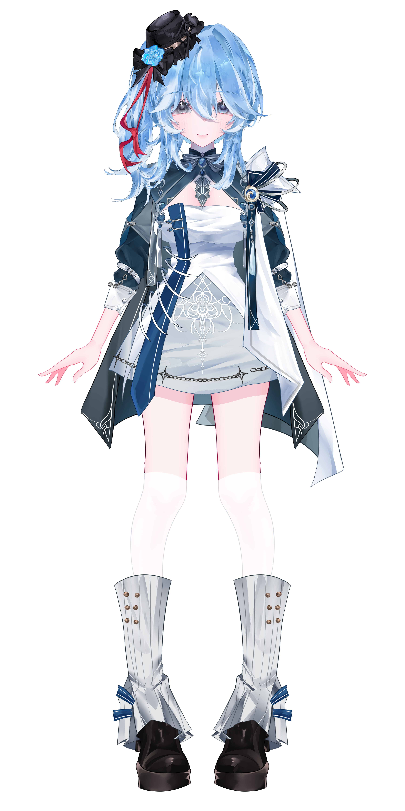

Pendekar pedang (magang) yang hobi makan mochi dan bikin pelatihnya jantungan! Yuk temenan sama aku! (Janji gak gigit, paling cuma nebas dikit)

Mochi, Berries, Pedang (tapi boong), Tidur...
"Aku sebenernya gak niat jahat kok... cuma pas latihan pedang, kadang tanganku suka kepleset... terus... ya gitu deh.
Sekarang lagi cari guru baru, ada yang mau daftar? (Asuransi nyawa tidak ditanggung ya!)"